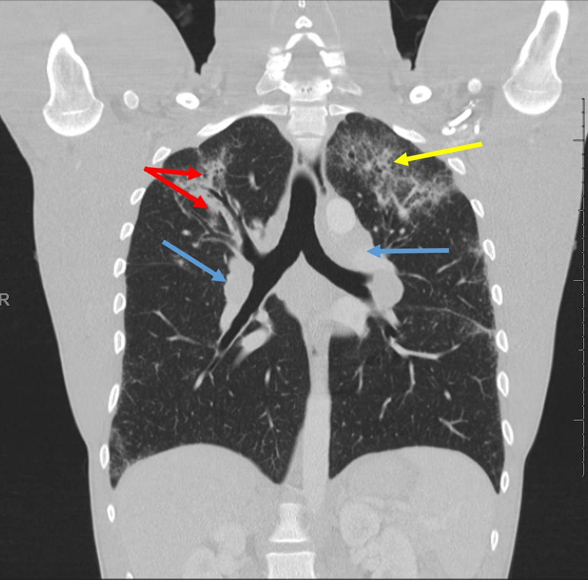

| PBL 1311 Chest CT |
|
|  | |
| In this coronal plane, there is prominent hilar and paratracheal lymphadenopathy
(blue arrows). The display windows (contrast/brightness) allow the appreciation of peribronchial infiltrates (red arrows)
and scattered interstitial infiltrates (yellow arrow). |
|